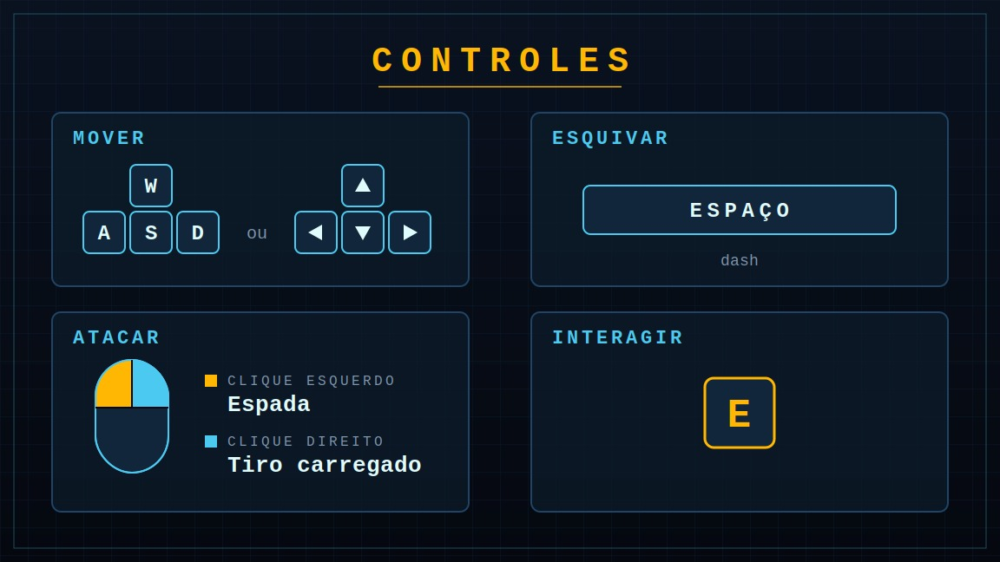

O DESTINO DA HUMANIDADE ESTÁ EM SUAS MÃOS
O passado é a única esperança para o futuro.
Descubra a história ↗ Jogar ↗
UMA CIDADE EM RUÍNAS
O último confronto pela humanidade
Em um futuro devastado pela inteligência artificial, um estudante retorna ao passado e encontra uma Londres completamente destruída. Em meio a hordas de inimigos, ele precisa encontrar o laboratório central da IA e superar desafios lógicos até chegar à câmara de Turing. Lá, enfrentará o núcleo de AEGIS, a inteligência artificial defeituosa responsável pelo caos. Sua vitória será a última esperança para que a humanidade possa voltar à superfície.
AQUELES QUE FAZEM PARTE DA MISSÃO
Personagens
Alan Turing
Inimigo Tank
Atirador
Perseguidor
SOBREVIVA AOS DESAFIOS
Como jogar
Aprenda os comandos e descubra como avançar nessa aventura.

POR TRÁS DO JOGO
Desenvolvimento
Conheça as ferramentas, tecnologias e pessoas responsáveis pelo desenvolvimento do RETURING.
Equipe de programação
Gustavo Henrique e Icaro Francionni foram os responsáveis pela programação do jogo, sendo Gustavo responsável pela interface e cutscene, enquanto Icaro desenvolveu o código do jogo.
Engine utilizada
A Godot é uma engine gratuita e de código aberto utilizada para criar jogos 2D e 3D.
Linguagem de programação

O GDScript é a linguagem de programação utilizada na Godot para desenvolver mecânicas e sistemas de jogos.
Principais funções
POR TRÁS DO PROJETO
Nossa equipe

Ana
Design
Criação das sprites.

Alice
Roteiro e organização
Criação do storyboard e da Documentação.

Eduarda
Programação
Criação do site.

Gustavo
Programação e trilha sonora.
Desenvolvimento da interface, cutscene e efeitos sonoros.

Ícaro
Programação
Código do jogo.
ACOMPANHE O DESENVOLVIMENTO
Conheça nosso projeto
Acompanhe o desenvolvimento do RETURING.
Acessar GitHub ↗